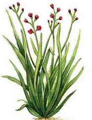
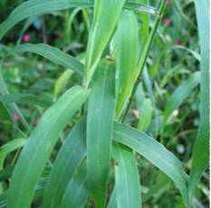
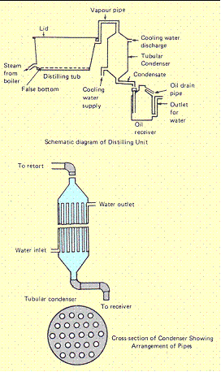

AGR 301 :: Lecture 21 :: PALMAROSA (Cymbopogon martini var. motia)

Area under cultivation
It is cultivated in Uttar Pradesh, Madhya Pradesh, Jodhpur (Rajasthan), Karnataka, Maharashtra and Tamil Nadu.
Family: Poaceae
Plant Description
Palmarosa is a wild growing plant related to lemongrass. It has fragrant leaves, long slender stems and terminal flowering tops. It is a drought hardy grass attaining a height of 1.5 to 2.5m having hairy and fibrous shallow root system with long linear lanceolate leaves. It produces large fawn coloured inflorescence containing while, hairy star like spiked flowers.
Centre of Origin: India

Soil
A well-drained sandy loam soil with soil pH of 7.5-8.5 is ideal for cultivation of Palmarosa and receiving rainfall of about 150 cm annually is an It can also be cultivated in well-drained clay loam soil which are free from water logging.
Climate
Warm tropical climate upto 300m elevation in the foothills is suitable for cultivation of Palmarosa. Temperature ranging from 10 - 360C with annual rainfall around 1000mm and ample sunshine are congenial for its growth. Moist and warm climate throughout the year accelerates its growth. Areas, which are affected by severe frost, are not suitable as the frost kills the grass and reduces the oil content.
Varieties
Varieties |
Characters |
IW-31245 |
Profuse tillering. 20-25t/ha of herbage under low irrigation. Oil yield-150bags in 3 cuts during 16-18months. Oil contains 90% total geraniol. It has superior rosaceous green odour of palmarosa. |
Trishna |
It possesses straw yellow clumps, long compact inflorescence and has profuse tillering. The oil contains 93% geraniol. |
Jamrosa |
It has vigorous growth, high yield of 35-45t/ha of herbage, it yields between 0.3-0.4% of oil in the herb which is rich in geraniol content (54-83%) and geranil acetate (17.89%). The oil yield was estimated between 130-150kg/ha in the second year. |
Propagation
Raising Seedlings in Nursery
Usually nursery is sown by end of April to mid of May under partial shade. Nursery beds are well prepared in May. The nursery beds are made by adding enough FYM , compost or organic matter. Channels are dug around the beds to provide irrigation. Normally 2 - 2.5 kg of seed is required to cover 100 sq.m nursery, which provides sufficient seedlings to plant one hectare area. As the seeds are small and light, they are mixed with fine soil for obtaining even distribution and ease in sowing. They are sown in lines, 15-20 cm apart. Seeds should not be sown densely to avoid overcrowding of seedlings The beds are watered lightly and regularly. Germination starts within two weeks. Later on, 0.2-0.5% solution of urea may be sprayed for good vegetative growth. In about 3-4 weeks, seedlings are ready for transplanting.
By Slips
For better quality and yield of oil it is recommended to grow Palmarosa by slips obtained by dividing well-grown clumps. Tops of clumps are cut off within 20-25 cm of the root. The latter is divided into slips and the lower brown sheath is removed to expose young roots. Slips should be taken from plants giving a good yield and a high quality of oil. However the rate of establishment of rooted slips is very poor as compared to nursery transplants. Slips should be planted in June-July or during the rainy season.
Planting
The field is prepared before the onset of monsoon. It is ploughed and harrowed so as to give a fine tilth. All the stubble and roots of weeds are removed. The seedlings are transplanted in the fields as soon as the rainy season sets in. They can be transplanted even earlier, if the weather is not very warm and irrigation is available. Healthy and established seedlings, which are about 15 cm in height, are carefully removed from the nursery and are planted at a spacing of 60 cmx60cm.
Intercultural Operations
The plantation should be kept free from weeds by regular weeding and hoeing. Two weeding cum hoeing operations are recommended, first 40 days after transplanting and the second 30 - 40 days after the first weeding. Among herbicides, Diuron @ 1.5 kg ai/ha or Oxyfluorfen @ 0.5 kg ai/ha are effective for weed control.
Irrigation
Requirement of irrigation depends upon the climatic conditions. The grass requires irrigation fortnightly during the growing season. With an ample supply of water, growth is luxuriant. It is a drought hardy species. However its growth is slow under rainfed cultivation where the plants grow in height but seldom covers the entire field. Two irrigations in rainfed crop significantly increased herbage and oil yields.
Manuring & Fertilization
Palmarosa is a long duration crop and removes substantial quantities of nutrients from the soil for producing herbage. Therefore, use of FYM @ 10 t /ha, 40 kg N, 50 kg P 0 and 40 kg K O as a 2 5 2 basal dose is recommended. About 60kg N/ha is applied in three split doses during the growing season. The application of NPK should be repeated in subsequent years. In fertile soils, manuring may not be required for the first two years. By manuring rich soils, the vegetative growth is increased and oil content may be slightly reduced.
Harvesting
The essential oil is distributed in all parts of the grass, viz., flower heads, leaves and stems, the flower heads containing the major portion. It is recommended to harvest the crop 7-10 days after opening of flowers. The number of harvest depends upon the climatic condition of the place of cultivation and method of crop management. During the first year, usually one crop is obtained in October-November, whereas 2-3 crops are obtained in the subsequent years in subtropical areas in the North Indian plains. Four harvests are taken in tropical areas of South and North-East. Usually, the grass is cut at a height of 5-8 cm from the ground level and the whole plant is used for distillation. The maximum yield of oil is obtained when the entire plant is at a full flowering stage. The harvested herbage is spread in the field for 4-6 hours to reduce its moisture by 50% and such semi-dry produce can be stacked in shady cool space for few days without much loss of its oil.
Yield
Palmarosa plantation remains productive for about eight years. However, the yield of grass and oil starts decreasing from the fourth year onwards. It is, therefore, recommended that the plantation be kept only for four years. Normally 200-250 q/ha of fresh herbage is obtained in first cutting and between 250-320q/ha in second and subsequent harvests upto three years under irrigated conditions. On an average, 200 kgs of oil are received during the growing period of 15-16 months.
The yield of oil for the first four years is as under:
1st year 60kg/ha
2nd year 80kg/ha
3rd year 80kg/ha
4th year 80kg/ha
Uses
Oil of Palmarosa is used in perfumery, particularly for flavoring tobacco and for blending of soaps due to the lasting rose-note it imparts to the blend. It also serves as a source for very high grade geraniol. Geraniol is highly valued as a perfume and as a starting material for large chemicals, viz., geranyl esters that have a permanent rose-like odour.
Distillation
The grass is either distilled afresh or is allowed to wilt for 24 hours. Wilting reduces the moisture content and allows a larger quantity of grass to be packed into the still, thus economizing the fuel use. The current method of distillation adopted in Kerala is primitive and obsolete and gives oil of poor quality, as it is based on hydro-distillation or direct-fired still. For good quality oil, it is advisable to adopt steam-distillation. The equipment for distillation consists of a boiler to produce steam, a distillation tub, a condenser and one to three separators. The distillation tub is made of mild steel and has a perforated bottom over which the grass rests. The tub has a steam inlet pipe at the bottom. A removable lid is fitted on to the top. Charging and discharging can be done in perforated cages with iron chains, which can be lowered in the tub with the help of a chain- pulley block. Different types of condensers are available, but tubular condensers are better than others. The condenser is provided with an inlet and outlet by means of which cold water is made to flow through the chamber to cool the pipes when the distillate flows through them.
To obtain the maximum yield of oil and to facilitate release of oil, the grass is chopped into shorter lengths. Chopping the grass has further advantages that more grass can be charged into the still and even packing is facilitated. The grass should be packed firmly as this prevents the formation of steam channels. The steam is allowed to pass into the still with a steam pressure from 18 to 32 kg in the boiler. The mixture of vapours of water and Palmarosa oil passes into the condenser. As the distillation proceeds, the distillate collects in the separator. The oil being lighter than water and insoluble floats on the top of the separator and is continuously drawn off. The oil is then decanted and filtered. Small cultivators can use direct-fire stills, but in such cases, properly resigned stills should be used. These stills are provided with a boiler at the bottom of the tub. This is separated by a false bottom from the rest of the tub. Water is poured at the bottom of the tub and grass is charged in the top portion. In the still, the water does not come in contact with the grass. The oil is stored in containers, preferably of glass or well-tinned iron. Containers should completely be filled to exclude any air and protect from sunlight as they affect the oil content

Multiple choice questions
- Palmarosa comes under the family of ___________
a. Poaceae b. Euphorbiaceae c. Convulaceae - Ideal soil pH for the cultivation of Palmarosa________
a. 7.5-8.5 b. 6-7 c. 5.5-6.5 - Palmarosa is a__________ duration crop
a. Short b. Medium c. Long - Maximum yield of oil is obtained when the entire palmarosa is at________ stage
a. Full flowering b. Partial flowering c. Maturation - Which part of the palmorosa contain essential oil
a. Flower heads b. leaves and stems c. Both
| Download this lecture as PDF here |